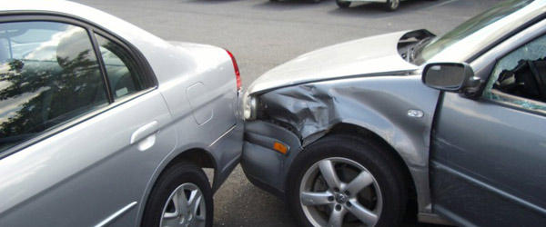

¿Qué Hacer en Caso de Accidente Leve? Guía Rápida
Diciembre, 2025 | Asistencia y Cobertura
Conoce los pasos cruciales a seguir inmediatamente después de un percance menor para proteger tu seguridad y asegurar la cobertura de tu plan ASISVial.
1. Seguridad Personal Primero
Mantén la calma y verifica si tú o tus pasajeros tienen lesiones. Enciende las luces de emergencia y, si es seguro, mueve el vehículo a un lado de la vía.
2. Contacta a tu Asistencia
Llama a ASISVial. Te guiaremos paso a paso sobre el protocolo a seguir, incluyendo cuándo contactar a las autoridades de tránsito.
3. Documenta el Suceso
Toma fotografías claras de los daños en todos los vehículos involucrados, la placa y la escena del accidente. Intercambia información con el otro conductor.
4. No Admitas Culpa
No asumas ni admitas verbalmente la responsabilidad del accidente. Deja que la aseguradora y las autoridades determinen las responsabilidades.
5. Asegura tu Cobertura
Entregar la documentación completa y seguir el protocolo asegura que tu reclamo sea procesado rápidamente y sin complicaciones.
Preguntar por Asistencia (24/7)